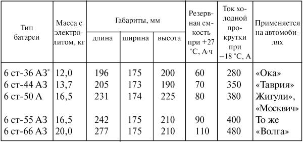

Как продлить жизнь аккумуляторной батареи
Обслуживание аккумуляторной батареи
Срок службы и эксплуатационные качества аккумуляторной батареи (АКБ) зависят от качества ее обслуживания, своевременного выявления и устранения неисправностей. Батарея может служить при хорошем уходе 4–5 лет. При недостаточном уходе АКБ, временно сохраняя работоспособность, сначала нечетко выполняет свои функции, а затем и совсем теряет свои качества. Появляются разного рода неисправности и неполадки.
Рассмотрим и укажем наиболее характерные способы их устранения.
Повышенный саморазряд, приводящий к быстрому снижению плотности электролита, возникает главным образом вследствие загрязнения электролитом поверхности батареи. В этом случае кисточкой, смоченной в 10-процентном подогретом примерно до 50 °C растворе кальцинированной или питьевой соды, очистите верхнюю часть батареи, удалив следы электролита. Хорошо промойте ее водой, насухо протрите чистой тряпкой, обезжирьте бензином и нанесите поверх мастики два слоя эпоксидного клея. Образовавшаяся стеклоподобная пленка надолго защитит верхнюю часть батареи от разрушительного действия следов электролита и грязи. Детали крепления батареи также очистите от окислов и покрасьте, а рамку АКБ покройте пленочной изолентой.
Повышенный саморазряд может наступить и вследствие загрязнения электролита. Поэтому его надо слить и как следует промыть батарею дистиллированной или чистой прокипяченной и отфильтрованной дождевой водой до прекращения выделения темного осадка (продукта распада – шлама). Залейте батарею дистиллированной водой и через час заряжайте ее током 0,5–1,0 А в течение суток. Слейте воду и залейте электролит плотностью 1,27 г/см3. Зарядите АКБ и во всех ее элементах доведите плотность до нормы. Таким образом продлевают жизнь выдыхающейся батареи. Слитый электролит хранить не имеет смысла. В батарею лучше заливать новый электролит, а старый нейтрализовать кальцинированной содой и слить в отведенное место.
Повышенный саморазряд может быть и следствием утечки тока через поврежденную изоляцию какого-либо провода или прибора автомобиля. Здесь надо отключить все потребители тока, сняв с вывода «+» АКБ клеммный наконечник и попробовать слегка коснуться им того места, где он был закреплен. Если возникает искра – налицо утечка тока, которую надо отыскать и устранить.
Нормальный саморазряд исправной АКБ составляет 1–2 % в сутки.
Неравномерная плотность электролита в отдельных элементах аккумулятора (погрешность составляет более 0,01 г/см).
Если после зарядки АКБ, особенно если батарея со стажем, плотность электролита в отдельных ее элементах более чем на 0,01 г/см3превышает норму, надо провести уравнительный заряд током в 1,5–2 А в течение часа. Зарядите сначала до уровня остальных разряженную банку. Следите по амперметру зарядного устройства, чтобы ток не превышал допустимого значения. Если такая зарядка не дает результата, то при пониженной плотности следует с помощью резиновой груши отсосать часть электролита, заменив электролитом плотностью 1,4 г/см3, и подзаряжать батарею током 2–3 А в течение 24 часов. Если после подзарядки напряжение АКБ будет меньше 12 В, то она не пригодна к эксплуатации.
Окисление полюсных штырей и наконечников проводов увеличивает сопротивление во внешней электрической цепи. Это возросшее сопротивление в момент пуска двигателя берет на себя долю напряжения АКБ, и к стартеру вместо 12 В подводится лишь 8–9 В, которых недостаточно для пуска двигателя.
Так, при частом снятии наконечников со штырей, когда постепенно нарушается их конусность, между ними образуется зазор, который вбирает в себя электролит и тем самым ускоренно образует окисную пленку. Поэтому при желании отключать аккумулятор во время стоянки автомобиля следует установить выключатель, присоединенный к отрицательному выводу АКБ и к «массе» автомобиля.
Наденьте на штыри АКБ фетровую или войлочную шайбу толщиной 2–4 мм, пропитанную щелочным составом, нейтрализующим электролит. Это предотвратит штыри и наконечники от окисления. Затянув болты наконечников на штырях, покройте их техническим вазелином, смазкой ВТВ–1 или мовилем.
Закупорка газоотводных отверстий в пробках и как следствие вспучивание, растрескивание, отслоение мастики от стенок моноблока АКБ.
Выверните пробки. Проверьте состояние двух отверстий на внутреннем отражателе пробки, а также – центрального отверстия с наружной ее стороны. При необходимости прочистите отверстия тонкой деревянной палочкой, а если дефекты обнаружены на верхней части АКБ, нанесите мастику разогретой лопаткой или предварительно разогретую битумную мастику с добавкой пластилина. Заполните ими зазоры, нагрев поверхность АКБ до 60 °C лампой в 200 Вт.
Повышенный или пониженный против нормы уровень электролита одинаково вредны для АКБ. При повышенном уровне электролит выплескивается через вентиляционные отверстия пробок. При пониженном – происходит оголение пластин, приводящее к их сульфатации и преждевременному отказу АКБ в работе.
Нужный уровень электролита устанавливают с помощью резиновой груши с пластмассовым наконечником, в котором высверлено отверстие или ножовочным полотном сделан пропил в 12 мм от конца наконечника. В каждый элемент АКБ доливают несколько выше нормы дистиллированной воды, затем, сжав грушу и опуская наконечник до упора в предохранительную сетку, вбирают в него лишний электролит. Уровень в 12 мм автоматически устанавливается на линии пропила (отверстия).
Короткое замыкание внутри АКБ, признаками которого являются «кипение» при зарядке и резкое падение напряжения электролита, чаще всего вызывается осыпанием активной массы и разрушением сепараторов.
Измерьте плотность электролита в банках. В короткозамкнутой банке плотность оказывается менее 1,1 г/см3, при ее заряжении происходит обильное газовыделение (кипение). Если проверка АКБ показывает, что один из ее элементов неисправен, то его можно вскрыть и осмотреть. Для этого удалите мастику вокруг этого элемента. Ножовкой распилите соседние межэлементные перемычки и выньте из отделения бака блок пластин. Удалите осадок и тщательно промойте бак. Осторожно раздвиньте пластины, чтобы вынуть сепараторы. Тщательно промойте водой разобранные части, просушите, осмотрите и, в зависимости от состояния, отремонтируйте их или замените. После устранения неисправностей блок пластин можно установить на место. Края крышки залейте мастикой. Сварку межэлементных перемычек производите угольным электродом, взятым из батарейки. Угольный стержень укрепите в специальном держателе, сделанном из проволоки, и соедините его с источником тока, используя для этого аккумуляторную батарею (подводимое напряжение не более 12 В). Второй провод соедините с перемычкой, которую необходимо запаять. Концом угольного стержня прикасаются к месту пайки и оплавляют свинец. При необходимости добавляют свинец. Во время пайки не следует допускать образования электрической дуги между свинцом и угольным стержнем. Спаянные места зачищают напильником.
Обычно короткое замыкание АКБ происходит из-за скопления на дне большого количества осыпавшейся активной части массы пластин – шлама. Иногда шлам удается удалить, не разбирая батарею. Для этого закрывают спичками все центральные отверстия пробок, а пробку поврежденной банки выворачивают. Сливают из банки электролит, а затем в днище корпуса неисправного элемента высверливают три-четыре отверстия диаметром 6 мм и проволокой с загнутым концом извлекают шлам, подливая в элемент дистиллированной воды. Затем днище корпуса очищают, обезжиривают и накладывают на него 10 слоев чистой полиэтиленовой пленки. Сверху кладут лист плотной бумаги и ставят на него разогретый утюг. Полиэтилен расплавляется и заполняет все высверленные отверстия. Проверку на течь производят с помощью дистиллированной воды. Удаляют лишний полиэтилен и заливают в элемент электролит. При установке АКБ на автомобиль используют резиновый поддон.
Обрыв цепи в соединительных мостиках между элементами батареи, признаком которого является отсутствие напряжения на выводных клеммах при одинаковой плотности электролита во всех банках, происходит из-за низкого качества сварки межэлементных соединений на заводе-изготовителе.
В этих случаях без снятия общей крышки восстановить соединение внутри банки необслуживаемой батареи невозможно, поскольку после устранения дефекта потребуется новая крышка, так что легче поставить новый аккумулятор, чем отремонтировать неисправный старый.
Сульфатация пластин – эта неисправность, когда батарея разряжена и с трудом поддается зарядке (резко повышается температура и обильно выделяются газы). При сульфатации на пластинах образуется крупно-кристаллический серно-кислый свинец, плохо проводящий электрический ток. Кристаллы препятствуют проникновению электролита внутрь активной массы пластин, в результате чего уменьшается их рабочая поверхность.
Причин возникновения сульфатации несколько: это и длительное бездействие батареи, и повышенная плотность электролита, и пониженный уровень электролита, и систематическая недозарядка батареи.
Устранить сульфатацию можно особым образом выполненной зарядкой батареи, при которой крупнозернистый сульфат превращается в мелкозернистый. Для этого заряжают аккумулятор зарядным током несколько часов, и затем из батареи сливают электролит.
Для полного стекания электролита батарею держат в опрокинутом положении в течение 5 мин. Затем ее дважды промывают дистиллированной водой и заправляют раствором питьевой соды (25 г соды на 1 л дистиллированной воды). Через 3 часа раствор соды выливают и заливают в аккумулятор в той же пропорции раствор поваренной соли, в течение часа заряжают его нормальным зарядным током. Затем раствор поваренной соли сливают, аккумулятор промывают и заливают в него раствор питьевой соды (40 г соды на 1 л дистиллированной воды), после чего аккумулятор снова подвергают зарядке на несколько часов. После этого батарею тщательно промывают, заливают электролитом и снова заряжают согласно инструкции.
При пропускании электрического тока в растворе соды или поваренной, соли на катоде образуется едкий натр, который легко растворяет крупнокристаллический серно-кислый свинец, образуя плюмбит натрия, который диссоциирует в растворе и не выпадает в осадок. Образующаяся окись свинца осаждается в качестве активной массы на положительной пластине.
Перезарядка и зарядка аккумулятора чреваты сокращением срока его службы. Перезарядка ускоряет разрушение (оползание) активной массы и самих решеток положительных пластин. В разряженном аккумуляторе разрушается (происходит оплывание) активная масса отрицательных пластин, а в тяжелых случаях оголяются решетки.
Старению аккумуляторной батареи и даже полному выходу ее из строя способствуют также: повышенное напряжение на клеммах при зарядке и как следствие – падение уровня электролита ниже защитной сетки на пластинах; разряженное состояние в течение длительного времени; повышенный ток разрядки на значительном промежутке времени.
В теплое время года при работе двигателя на средних оборотах вольтметром следует проверить рабочее напряжение зарядки. Оно должно быть в пределах 13,9–14,2 В. Причиной перезарядки может быть плохой контакт регулятора напряжения (реле напряжения) с массой, окисление переходных контактов в цепи, питающих реле-регулятор, например, при окислении контактов замка зажигания вследствие значительного падения напряжения возрастает напряжение генератора и в цепи заряда устанавливается ток большой силы.
Проверку рабочего напряжения зарядки производят подключением вольтметра к зажиму «+» генератора и зажиму «15» контактной группы замка зажигания. Включают зажигание. Падение напряжения более 0,1 В не допускается. При большем падении напряжения ремонтируют или заменяют контактную группу замка зажигания. Если же неисправными оказываются реле-регуляторы, то напряжение можно отрегулировать только у регулятора РР–380; электронное реле напряжения при этом заменяют (у генераторов Г222 и 37.3701 регуляторы электронные и встроены в генератор). Для проверки реле-регулятора подключают к зажиму генератора «+» и «ш» вольтметр, после чего измеряют напряжение при работе двигателя на средних оборотах при включенных фарах. Если напряжение генератора превышает норму (14,2±0,2 В) на 10–12 % (16–17 В), ресурс аккумулятора сокращается в 2–2,5 раза.
В холодное время года зарядный ток уменьшается из-за большого внутреннего электрического сопротивления холодного аккумулятора. Отдавая запас энергии на пуск двигателя (при длительных попытках пуска), на обогрев салона автомобиля и разных вспомогательных устройств, аккумулятор медленно разряжается. С помощью внешнего зарядного устройства его следует заряжать силой тока в амперах, равной 0,1 номинальной емкости батареи, до тех пор, пока не наступит обильное газовыделение («кипение») электролита во всех элементах и не станут постоянными в течение 2–3 ч напряжение батареи и плотность электролита. Рекомендуется в конце процесса зарядки в 2 раза снизить силу зарядного тока. Если температура электролита достигла 45 °C, то следует уменьшить зарядный ток или прервать зарядку на время, необходимое для снижения температуры до 30 °C.
В любом случае в холодное время года старайтесь батарею ставить на зарядку. Это ей не повредит.
Трещина в корпусе АКБ – сочится электролит. Слейте электролит, промойте водой трещину и высушите. Разделайте трещину напильником. Смешайте с эпоксидным клеем опилки, добыв их из какой-нибудь другой, уже непригодной аккумуляторной батареи. Полученной массой эпоксидного клея с опилками заделайте трещину и поставьте аккумулятор в горизонтальном положении на просушку. В просушенную батарею можно заливать электролит.
Необслуживаемая аккумуляторная батарея нового типа, готовая к употреблению, представляет собой полупрозрачный полимерный корпус с общей крышкой и межэлементными соединениями через отверстия в перегородках.
Типы выпускаемых в Тюмени и Свирске аккумуляторных батарей приведены в табл. 5.
Таблица 5
* Здесь и ниже: 6 – число аккумуляторов в батарее; ст – стартерный; 36, 44, 50, 55, 66 – номинальная емкость при 20-часовом режиме разрядки, А?ч.; А – батарея обычной конструкции, но с полимерным корпусом; AЗ – необслуживаемая батарея в полимерном корпусе.
Новый тип аккумуляторных батарей обладает целым рядом преимуществ: уровень электролита в банках виден снаружи; увеличенный объем электролита над пластинами избавляет от необходимости доливать воду. При нормальном зарядном токе батарея нуждается в доливке дистиллированной воды не более 1 раза в 4 месяца эксплуатации. Батарея имеет меньший саморазряд и может храниться залитой электролитом и заряженной в течение 12 месяцев без подзарядки, после чего оказывается пригодной для немедленного пользования. Отличается от обычной большей долговечностью, обеспечивает повышенный стартерный ток. К этому надо добавить резервную емкость, гарантирующую нормальный пробег автомобиля в случае выхода из строя генератора. И еще: при холодной прокрутке двигателя на 15-й секунде напряжение батареи не падает ниже 7,2 В.
Возможные неисправности, их причины и способы устранения те же, что и у обслуживаемых батарей, однако общая трудоемкость ухода в процессе эксплуатации у «необслуживаемых» батарей значительно ниже – и в этом также их преимущество.
Зимняя эксплуатация АКБЗимняя эксплуатация усложняет работу АКБ. В сильные морозы увеличивается вязкость и уменьшается электропроводность электролита, а попытки «прогреть» его с помощью кратковременного включения фар дальнего света особого эффекта не дают.
Однако, если на ночь занести батарею домой, то утром двигатель легко запускается.
Поддерживает положительную температуру АКБ тепло, накопленное во время езды автомобиля. Для этой цели АКБ ставят в утепленный ящик или обертывают войлоком, что в 1,5–2 раза замедляет процесс ее остывания. Скорость остывания электролита при этом составляет 1,5–2 °C в 1 час при температуре наружного воздуха от –15 до –20 °C, что позволяет без особых трудностей запустить двигатель при условии, конечно, если батарея нормально заряжена и плотность электролита не ниже 1,27 г/см3при температуре + 15 °C. He нужно смущаться, если холодный электролит показывает меньшую плотность: на каждые 15° надо просто делать поправку в 0,01 г/см3, и тогда нельзя ошибиться в расчетах.
Зимние выезды с включением стартера, отопителя, фар, стеклоочистителя, стеклонагревателя не возвращают АКБ полноценный заряд с помощью генератора, да и реле напряжения, стартер не всегда бывают ухоженными, а от их исправности зависят степень заряженности АКБ и надежность пуска двигателя при низких температурах. Нежелательны продолжительные, более 10 с, пуски двигателя стартером.
Длительное время работы стартера вызывает коробление пластин АКБ и сокращает срок ее службы. Еще более тяжелой ошибкой считается, когда стартер включают на 8–10 с, затем выключают его на 1–2 с и тут же включают опять. И так повторяется много раз, пока двигатель не начинает работать. Мало того, что при этом сокращается срок службы АКБ, но и контакты тягового реле подгорают.
Нормальным считается пуск двигателя, когда стартер после включения прокручивает коленчатый вал до тех пор (но не более 10 с), пока двигатель не начнет работать. Если двигатель за это время не заработал, стартер выключают и, дав АКБ 20 с на отдых, включают вновь на 10 с. Наконец, еще через 20 с делают третью попытку пуска двигателя и, если она окажется вновь безуспешной, ищут неисправность в двигателе.
Диагностирование дефектов аккумулятораПроведение диагностики с получением необходимой информации по скрытым неисправностям АКБ связано с приобретением приборов, высокая стоимость которых делает невозможным их покупку. Простейший из них – это тестер. Им можно определять напряжение на выводах АКБ, повышенный саморазряд, вследствие загрязнения электролитом поверхности батареи, короткое замыкание внутри АКБ, обрыв цепи в соединительных мостиках между элементами батареи. Однако показываемая на его шкале картина не всегда дает необходимую информацию о процессе, происходящем в самом аккумуляторе. Возможно, что прибор, которым можно будет определять все «болезни» АКБ, в недалеком будущем появится. А пока надо стремиться уметь все делать собственными руками на уровне профессионалов, доверять своему опыту, который не даст ошибиться в постановке диагноза «заболевания» аккумуляторной батареи.